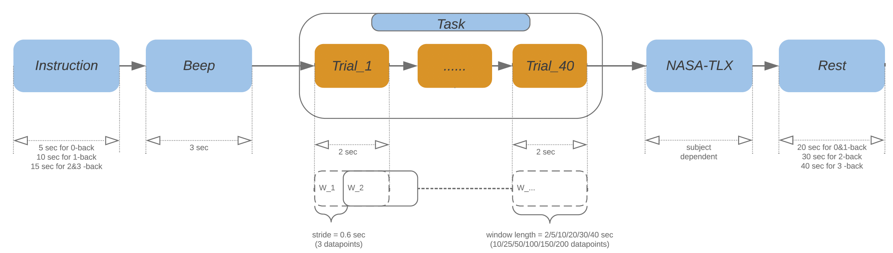
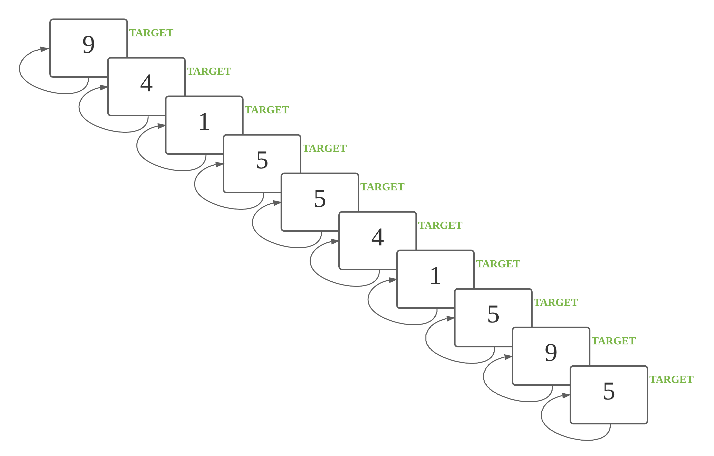
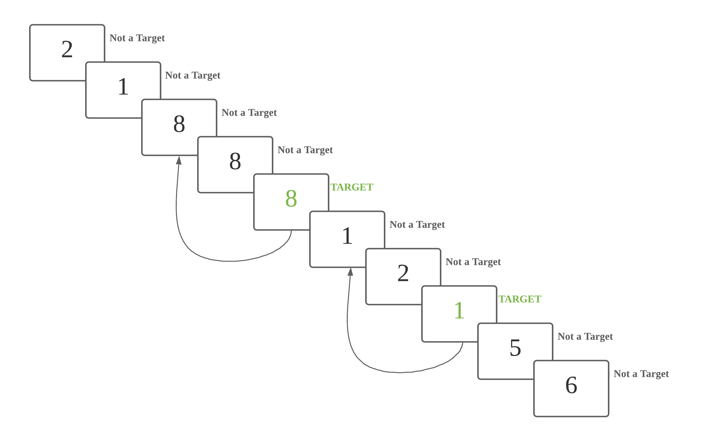
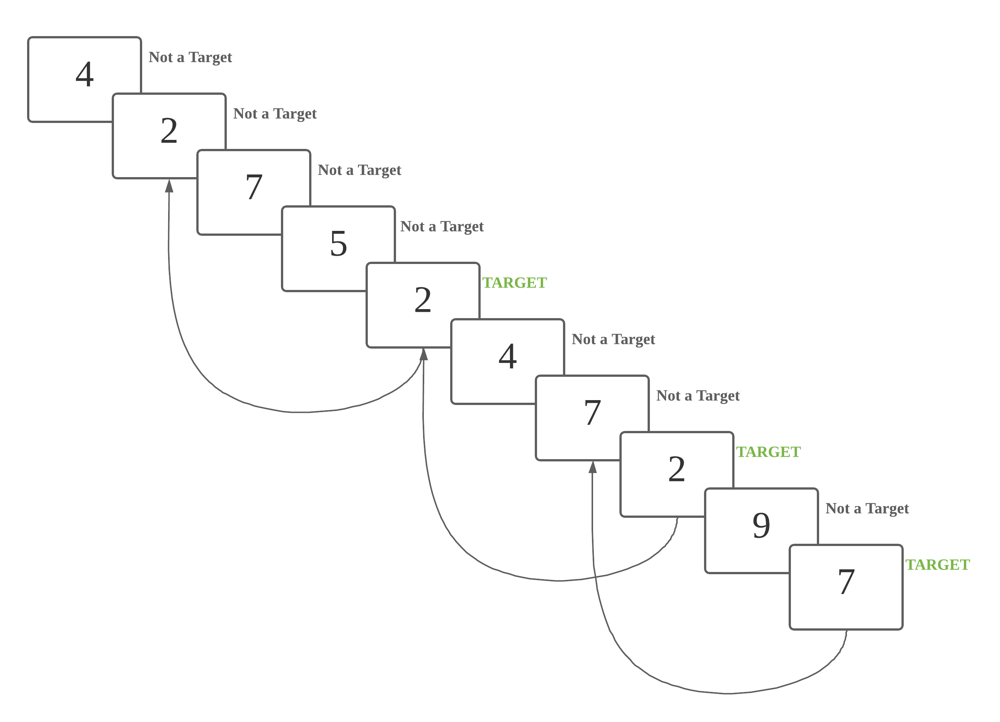
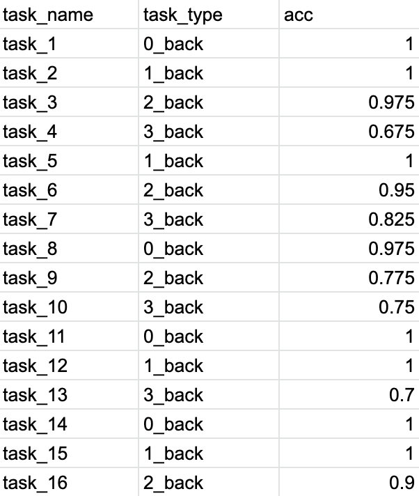

The Tufts fNIRS to Mental Workload Dataset
Welcome to the Tufts fNIRS to Mental Workload (fNIRS2MW) open-access dataset! Using this dataset, we can train and evaluate machine learning classifiers that consume a short window (30 seconds) of multivariate fNIRS recordings and predict the mental workload intensity of the user during that interval. We have collected fNIRS brain activity recordings from 68 partipants during a series of controlled n-back experimental tasks designed to induce working memory workloads of varying relative intensity. Of all available datasets suitable for building mental workload classifiers, this dataset is the largest known to us by a factor of 2.5! Plus, it supports fairness audits by age, gender, and race.
Project Motivation
We are interested in building brain computer interfaces (BCIs) that would help out everyday computer users working at a desktop or laptop. In our target future use case, a user would actively use a keyboard and mouse as usual, but also wear a non-intrusive headband sensor that would passively provide real-time measurements of brain activity to the computer. Based on moment-to-moment estimates of mental workload, the computer could adjust the interface to support the user.
Functional near-infrared spectroscopy (fNIRS) is a promising sensor technology for achieving this goal of "everyday BCI". We have developed a prototype fNIRS probe mounted on a headband that we used to collect this dataset.
Looking at the first decade of research on using fNIRS to estimate mental workload, we have identified three barriers that stand in the way of building effective mental workload classifiers using fNIRS data:
- The lack of available data. Previous work typically collects proprietary datasets from only 10-30 subjects, often from very homogenous populations. Much larger, more heterogeneous open-access datasets are needed to build everyday BCI systems that work for many users.
- The lack of standardized evaluation protocols. Many previous efforts to build mental workload classifiers do not follow best practices in terms of dividing data into training and test sets in a way that allows reliable assessment of generalization potential (how well will this work for a new user?). For many works, it is not even clear how to reproduce their train/test splits. The release of a dataset should be accompanied by a standardized protocol, so that other teams can follow the very same experimental design, which makes results comparable and enables scientific progress.
- The high cross-subject variability in fNIRS data. Collected sensor data varies due to differences in individual physiology, sensor placement, and other sources of noise. It is important that datasets represent this diversity so that progress can be made in generalizing to new users and new sessions.
Our project's contributions are:
- We release a large open-access dataset of 68 participants. This dataset is the largest known to us by a factor of 2.5.
- We provide a standardized protocol for evaluating classifiers and report benchmark results on our data under three paradigms of training: subject-specific, generic, and generic + fine-tuning. See our paper (opens new window) and code (opens new window) for details.
- We provide rich demographic information for each subject (age, gender, race, handedness) which enables auditing the "fairness" of fNIRS classifier performance across subpopulations. We view such audits as essential to make sure BCI works for everybody.
- Our dataset is targeted at everyday BCI. Our headband-mounted sensor is non-intrusive and easy to put on / take off when performing everyday tasks. It does not require a fabric cap covering the whole skull (like many alternatives) and does not require any complicated registration to landmarks.
Dataset Summary
For a complete dataset summary, see our public Datasheet PDF (opens new window).
For each participant (68 recommended; 87 total), the dataset contains the following records obtained during one 30-60 minute experimental session. Each subject contributes just over 21 minutes of fNIRS data from the desired n-back experimental conditions, with remaining time related to rest or instruction periods.
-
fNIRS recordings
- a multivariate time-series representing brain activity throughout the session, recorded by a sensor probe placed on the forehead and secured via headband
- All measurements are recorded at a regular sampling rate of 5.2 Hz.
- At each timestep, we record 8 real-valued measurements, one for each combination of 2 measured concentration changes (oxygenated hemoglobin and deoxygenated hemoglobin), 2 optical data types (intensity and phase), and 2 spatial locations on the forehead. The units of each measurement are (change in) micro-moles of (oxy-/deoxy-)hemoglobin per liter of tissue.
-
Activity labels
- Annotations of the experimental task activity the subject performed throughout the session, including instruction, rest, and active experiment segments.
- We label each segment of the active experiment as one of four possible n-back working memory intensity levels (0-back, 1-back, 2-back, or 3-back). Increased intensity levels are intended to induce an increased level of cognitive workload.
-
Demographics
- The participant’s age, gender, race, handedness, and other attributes. This lets us measure and audit performance by subpopulation (e.g. how does the classifier perform on white subjects vs. black subjects).
-
Activity performance
- We record the participant’s correctness at the working memory tasks (did they correctly identify when the stimuli was the same as one from n steps ago?). This lets us assess data quality and enforce eligibility criteria.
# Sliding window fNIRS data for classifiers
To improve analysis speed and reproducibility, we also make available a preprocessed version of the data that was used in all our reported experiments. We applied bandpass filtering to remove artifacts, and extracted sliding windows of length 30 seconds and stride 0.6 seconds (3 timesteps).
Per-subject CSV files containing the sliding window data using windows with 30-second duration and 0.6-second stride are available here: https://tufts.app.box.com/s/7l8rz3tpos1il637kmhn57mzacdldyv4/folder/144901642550 (opens new window)
Screenshot of the first few lines of the CSV from one subject's data: 
Each row of the CSV file represents the fNIRS sensor measurements at one timestep.
chunk: indicating the index of the window (the window index increments by one as time goes on)label: indicating if the intensity level, either 0/1/2/3
All rows with the same chunk id
represent the time
series for a specific individual
window. This window of measurements is the input to our classifier.
There are 8 measurement columns, which we use as features for machine learning classifiers:
- AB_I_O, AB_PHI_O, AB_I_DO, AB_PHI_DO
- CD_I_O, CD_PHI_O, CD_I_DO, CD_PHI_DO
Each column is a separate measurement of a hemoglobin concentration in the blood moving through the user's brain. Measuring the changes in these blood oxygen concentrations over time can be a useful proxy of mental workload intensity. The units of each measurement are μmol/L (micromoles per liter).
The feature names here indicate:
- which sensor location on the forehead was used (AB or CD)
- which optical measurement type was used (I = intensity, PHI= phase)
- which blood oxygen concentration was being measured (O = oxygenated hemoglobin; DO = deoxygenated hemoglobin)
Note: Our box.com data release also offer other window sizes (2, 5, 10, 20, 30, and 40 seconds) if desired. We focused on the 30-second windows, which we identified as preferred.
Publications
The paper describing our dataset and benchmarks can be found here:
The Tufts fNIRS Mental Workload Dataset & Benchmark for Brain-Computer Interfaces that Generalize
Zhe Huang, Liang Wang, Giles Blaney, Christopher Slaughter, Devon McKeon, Ziyu Zhou, Robert Jacob, and Michael C. Hughes
To appear in the Proceedings of Neural Information Processing Systems (NeurIPS 2021) Track on Datasets and Benchmarks , 2021
Lead authors ZH & LW contributed equally, as did supervisory authors RJ & MCH.
We are pleased to report that the paper describing our dataset and benchmarks was recently accepted for publication at the new Track on Datasets and Benchmarks happening at NeurIPS 2021. NeurIPS is a top-tier conference for machine learning research.
Please cite our papers if you find these datasets (fNIRS2MW-Visual and fNIRS2MW-Audio) useful:
Wang, L., Huang, Z., Zhou, Z., McKeon, D., Blaney, G., Hughes, M. C., & Jacob, R. J. K. (2021). Taming fNIRS-based BCI input for better calibration and broader use. In The 34th Annual ACM Symposium on User Interface Software and Technology (pp. 179-197).
Huang, Z., Wang, L., Blaney, G., Slaughter, C., McKeon, D., Zhou, Z., Jacob, R. J. K., & Hughes, M. C. (2021). The Tufts fNIRS Mental Workload Dataset & Benchmark for Brain-Computer Interfaces that Generalize. In Proceedings of the Neural Information Processing Systems (NeurIPS) Track on Datasets and Benchmarks. https://openreview.net/pdf?id=QzNHE7QHhut
Wang, L., Zhang, J., Liu, J., McKeon, D., Brizan, D. G., Blaney, G., & Jacob, R. J. K. (2024). Empower real-world BCIs with NIRS-X: An adaptive learning framework that harnesses unlabeled brain signals. In Proceedings of the 37th Annual ACM Symposium on User Interface Software and Technology (pp. 1–16).
Data Collection Procedures
# IRB and COVID-19 Safety Approval
Procedures to collect data were approved by Tufts institution's IRB (opens new window), and our deidentified dataset was approved for public release (STUDY00000959). Each participant gave informed written consent, and was compensated $20 US.
Because collection occurred during the COVID-19 pandemic in early 2021, we also got approval from the Tufts Integrative Safety Committee (ISC). We followed required sanitation and social distancing practices: experimenters used personal protective equipment and disinfected the fNIRS probe for each subject.
# Task Description
- Each participant completed
16blocks of n-back trails (0→1→2→3→1→2→3→0→2→3→0→1→3→0→1→2). - Each block is composed of:
40trails ( display for0.5seconds, hidden for1.5seconds).

# Task introduction
N-back video introduction:Before experiment started, the system played a short introductory video, showing an example of a user completing n-back tasks, with voice-over and caption explanations.
Sample scripts for N-back task video are as below:Today you will be completing a series of n-back tasks. You will be presented with many numbers, one after another. Some of these numbers will be targets. A number is a target if it is identical to the one shown n steps previously.
Here is an example of a 2-back task. In this case, n = 2. The highlighted 8 is a target number, since the number 2 steps back is also 8.
Your job will be to press the left arrow key each time you see one of these target numbers. If the number shown is not a target number, you should press the right arrow key.
Let’s view an example of a 0-back task.
At the beginning of each task, you will hear a few beeps which indicate the start of the task.
The current type of n-back task can be found at the top of the task window. In this example, n = 0. For the purposes of this demo only, the stack of numbers already shown is included beneath the task window.
When n = 0, every number is a target, since every number is identical to the number 0 steps back. That is, every number is the same as itself. For 0-back, the participant presses the left arrow key after each number appears, and never presses the right arrow key.
Now let’s view an example of a 1-back task.
The participant should press the right arrow key for all non-target numbers. When n = 1, a number is only a
target if it is identical to the number 1 step back. Once the participant identifies a target number, they should press the left arrow key instead.
For example, this 4 is a target number because the previous number was also 4. The participant should press the left arrow key, and then continue pressing the right arrow key until they see the next target number.
Here is another target number. The number 1-step back was also 2, so the participant should press the left arrow key.
During today’s experiment, the stack of already shown numbers will not be visible to you. It is your job to remember the numbers that were n-steps back so that you are able to identify the correct target numbers.
There will be 16 rounds in total. During each round, you will complete an n-bask task, where n is either 0, 1, 2, or 3.
Before each task, there will be instructions reminding you how to find the target numbers for the current n. During the task, you will be shown 40 numbers. Each time you see a target number, you should press the left arrow key. For all non-target numbers, you should press the right arrow key.
After each task, you will complete a survey. Once you have completed the survey, you will be able to rest for 20 seconds.
The experiment will take approximately 40 minutes.
After the entire experiment is finished, you will complete a short interview about your experience.
Please remain seated and do not talk or adjust the headband while completing the experiment. However, if you do feel uncomfortable at any point, let the operator know and they will stop the experiment.
Generel introduction: Before each task, the system displayed a graphic depicting how to identify targets for the current n, with voice-over. The graphic and sample scripts for 0-back are as below:

This is a 0 back task. Every number is a target number.
The graphic and sample scripts for 1-back are as below:

This is a 1 back task. A number is a target if it is identical to the previous number.
The graphic and sample scripts for 2-back are as below:

This is a 2 back task. A number is a target if it is identical to the number 2 steps back.
The graphic and sample scripts for 3-back are as below:

This is a 3 back task. A number is a target if it is identical to the number 3 steps back.
# Data Structure
Our released dataset includes (Link to fNIRS2MW dataset (opens new window)):- fNIRS measurements in fNIRS_data (opens new window);
- Supplementary data:
- demographic and contextual information in pre-experiment (opens new window);
- Cognitive task performance in task_accuracy (opens new window);
- experiment log in log (opens new window);
- post-experiment interview in interview (opens new window);
- subjective workload in nasa-tlx (opens new window);
***************************************
** fNIRS2MW dataset folder structure **
***************************************
|- qualified_subjects_list.pdf
|- pre-experiment //
|- experiment //
| |- log //
| |- task_accuracy //
| |- fNIRS_data //
| | |- raw_data //
| | |- band_pass_filtered //
| | | |- whole_data //
| | | |- slide_window_data //
| | | | |- size_02sec_10ts_stride_03ts
| | | | |- size_05sec_25ts_stride_03ts
| | | | |- size_10sec_50ts_stride_03ts
| | | | |- size_20sec_100ts_stride_03ts
| | | | |- size_30sec_150ts_stride_03ts
| | | | |- size_40sec_200ts_stride_03ts
|- post-experiment //
| |- nasa-tlx //
| |- interview //
| |- * (all other folders)
# Data Format
We introduce and describe the data format of fNIRS data (raw and pre-processed) and supplementary data as below:# fNIRS Data (opens new window)
68 participants were recruited, aged
18 to 44 years.
None of the
participants reported neurological, psychiatric, or other brain-related diseases that might
affect the result.
# raw data (opens new window)
TODO
# band pass filtered data (opens new window)
After pre-processing (Dual-slope and band pass filter), we have features/columns as below:
-
label: The label for each row.
- The values shoule be in the set {0, 1, 2, 3}, representing 0-back/1-back/2-back/3-back tasks respectively.
- It should be the same for all rows in the same chunk.
-
chunk (Only in slide window data): The chunk number for each
chunk.
- It starts at
0and increases by1for each chunk. - It should be the same for all rows in the same chunk.
- It starts at
- AB_I_O, AB_I_DO: Intensity of oxy & deoxy from detector AB.
- CD_I_O, CD_I_DO: Intensity of oxy & deoxy from detector CD.
- AB_PHI_O, AB_PHI_DO: Phase of oxy & deoxy from detector AB.
- CD_PHI_O, CD_PHI_DO: Phase of oxy & deoxy from detector CD.

# whole data (opens new window)
Each subject's .csv file includes continuous data of 16 tasks (exclude data during
self-evaluation (nasa-tlx) and rest period).
Screenshot of deidentified data sample is as below: 
# slide window data (opens new window)
- Window size:
10/25/50/100/150/200timestamps (2/5/10/20/30/40seconds) - Window stride:
3timestamps (rough0.6second)
Screenshot of deidentified data sample is as below:
# Supplementary Data
To ensure quality and consistency, we used several criteria to identify which subjects' data are suitable for classifier evaluation.
# demographic and contextual information (opens new window)
Demographic and contextual information is recorded before the experiment.
Please see details in the data directly# task_accuracy (opens new window)
We measured the subject's performance at the n-back task based on the accuracy of the subject's response for each digit.the accuracy of each n-back task was recorded.
Please see details in the screenshot of fake data sample as below:

# nasa-tlx (opens new window)
This is a good way to evaluate the perceived/subjective mental workload.
Total 16 "serial_feedback" .csv files
for 16 n-back tasks:
12files start with "train_1_1_" (1-12) match the first1-12tasks,4files start with "test_1_2_" (1-4) match the last4tasks.- Useful features include:
- movement: subject report if the headband is moved or not,
- uncomfortable: subject report if feeling unfortable during the experiment or not,
- mental: mental workload after the task from low (
0) to high (100) - performance: performance after the task from low (
0) to high (100) - effort: effort needed for the task from low (
0) to high (100) - frustration: frustration felt during the task from low (
0) to high (100)
Please see details in the screenshot of deidentified data sample as below: 
# log (opens new window)
Hair blocking, light leaking, fNIRS instrument settings and other issues during the experiment were recorded.
# interview (opens new window)
The original audios were destroyed immediately following the IRB protocol.